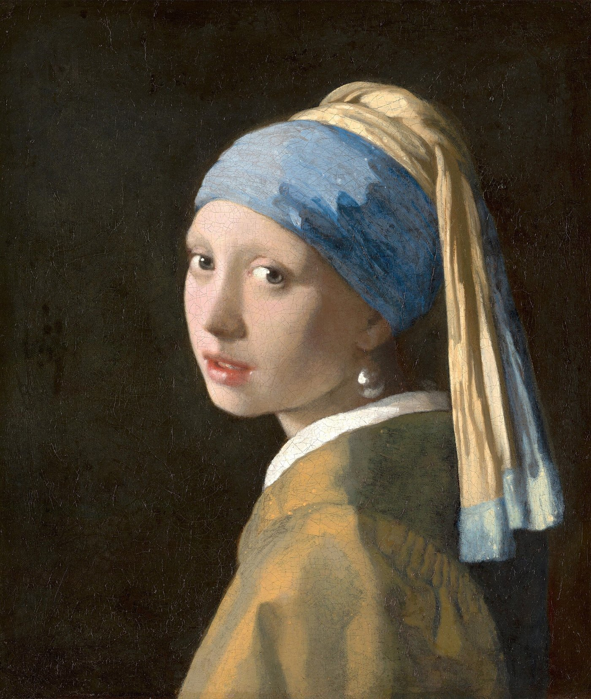
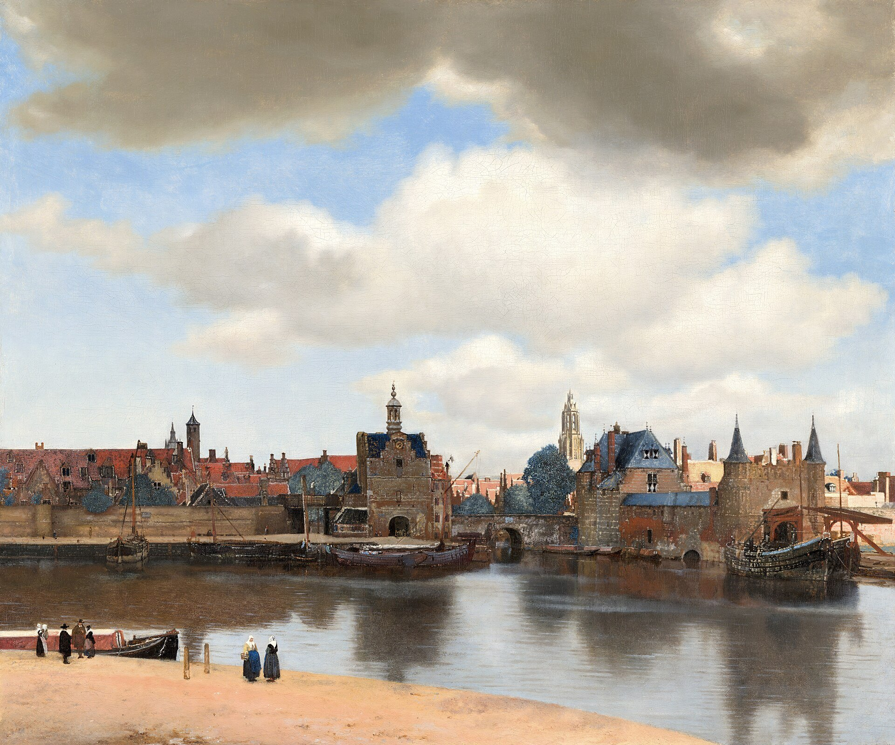
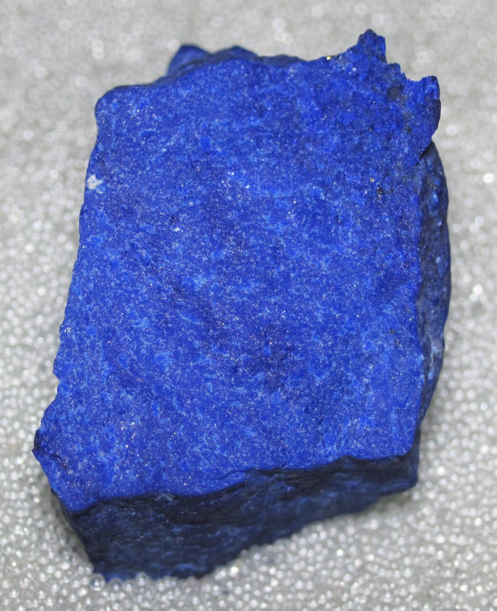
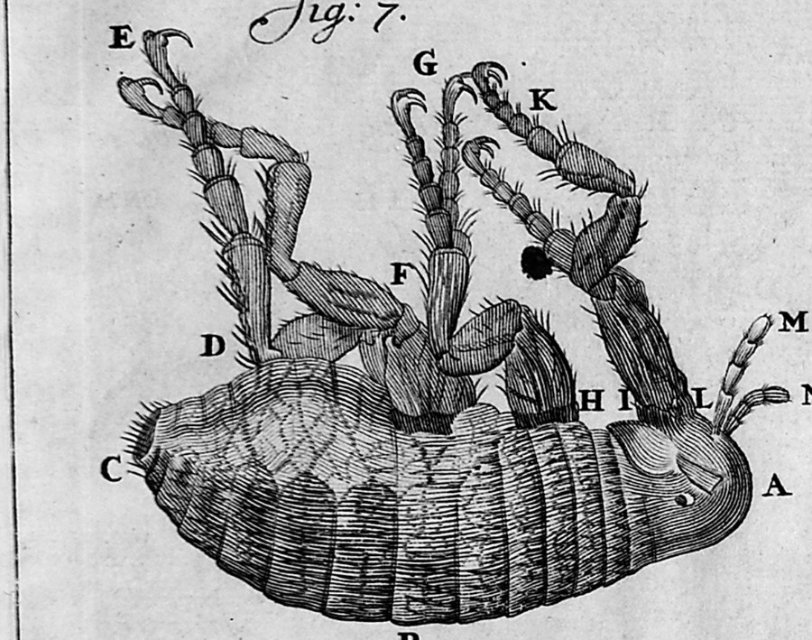
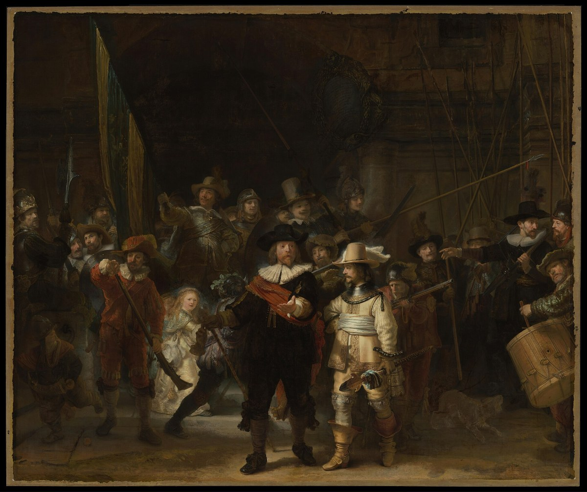

Vermeer: Girl with a Pearl Earring
~11,665 after the ice, or about 1665.
Look at the pearl

Tap anywhere on the picture.
Tap the pearl, and a magnifier appears there. You can drag the magnifier about, and pinch the picture to make the whole of it bigger.
Now look at how the pearl hangs from her ear.
It doesn't. There is no hook, no loop, no wire. The pearl is one bright touch of white paint at the top, a softer grey-white shape underneath where it catches the light from her collar, and nothing joining it to her at all. Your eye does the rest.
The painting is not big. It is 44.5 centimetres tall and 39 across.
With the magnifier you can see fine cracks all over her. They are called craquelure — say "krak-LOOR." Oil paint dries very slowly into a hard, thin skin. The canvas underneath swells in damp weather and shrinks in dry, and after three hundred and fifty years of that, the paint cannot bend with it. So it cracks.
Who she was
Nobody knows.
She is not a portrait of anyone. Dutch painters of the time made pictures they called tronies — say "tro-NEEZ" — which were faces in costume: an old man, a soldier, a girl in a turban. The turban is part of the costume, the kind of foreign-looking dress Dutch painters liked to put on a model.
In 2020 the Mauritshuis, the museum in The Hague where she hangs, published what it had found after looking at her with microscopes, X-rays, and scanners that map the chemical elements in the paint. Some of it nobody had seen in three hundred and fifty years. One thing was her eyelashes. Vermeer painted them, tiny hairs around both eyes, too fine to see without a microscope.
The painter
Johannes Vermeer was born in Delft, a town in Holland, in October 1632, and baptised in its New Church on the last day of that month. Four days later, in the same church, the same thing was done for a baby called Antonie van Leeuwenhoek. Leeuwenhoek grew up to make the best microscopes in the world, and to be the first person to see living things far too small for any eye: tiny animals swimming in a drop of water.
Vermeer became a painter. When he was twenty-one he joined the painters' guild of Delft, and he could not pay the whole fee. He paid a quarter of it, and the rest three years later. He ran his family's inn on the market square. He married, and he and his wife had a houseful of children.
He painted slowly. Only about thirty-five paintings by him survive.
He died in 1675, when he was forty-three, owing money all over town. The next month his widow gave the baker two of his paintings to settle a bill for bread. The bill was for 617 guilders, which was about three years of bread.
Delft
Delft was a town of canals. Beer was brewed there, and cloth was woven, and while Vermeer was growing up something new began to be made there: blue-and-white plates.
Dutch ships sailed to Asia for pepper and silk, and for porcelain from China — thin, hard, white, and painted in blue. Everybody who could afford it wanted some. Then, in the 1640s, China fell into a war, and the porcelain stopped coming. The potters of Delft could not make real porcelain; they did not have the right clay. So they made a copy. They covered ordinary clay in a glaze made white with tin, and painted it blue with cobalt, in patterns borrowed from the Chinese. In 1647 there were four potteries in Delft. By 1661 there were more than twenty. The plates are still called Delft Blue.
This is what Delft looked like to Vermeer. He painted it when he was about twenty-eight.

Dutch ships sailed to Asia for pepper and silk, and for porcelain from China — thin, hard, white, and painted in blue. Everybody who could afford it wanted some. Then, in the 1640s, China fell into a war, and the porcelain stopped coming. The potters of Delft could not make real porcelain; they did not have the right clay. So they made a copy. They covered ordinary clay in a glaze made white with tin, and painted it blue with cobalt, in patterns borrowed from the Chinese. In 1647 there were four potteries in Delft. By 1661 there were more than twenty. The plates are still called Delft Blue.
One morning in October 1654, when Vermeer was twenty-one, the town's gunpowder store blew up. There were about forty thousand kilograms of powder in it: forty tonnes. More than two hundred houses were flattened. A painter called Carel Fabritius, who lived nearby and had studied with Rembrandt, was killed at his easel.

The blue
The blue of her turban is called ultramarine. The word means "beyond the sea," because that is where it came from.
It is a stone, ground to powder: lapis lazuli, a deep blue rock with specks of gold-coloured pyrite in it. In Vermeer's time nearly all of it came from one set of mines high in the mountains of northern Afghanistan. It travelled from there by land and sea to Venice, and from Venice north to painters all over Europe. The map below shows the whole way.
Nobody wrote down the journey of any one stone, so the dashed line is a guess. It goes by camel and mule west across Persia to Aleppo, a great market town in Syria where the caravans met European merchants; by ship across the Mediterranean to Venice; over the Alps by mule; and down the river Rhine by boat. A caravan covered about thirty kilometres a day. Count only the days of travelling and the trip takes about eight months. But nothing went straight through. Caravans waited to fill up, ships waited for the wind, the mountain passes closed for the snow, and the stone was bought and sold along the way. A year or two is a fair guess.
Grinding it is not enough. Crushed lapis is a dull grey-blue, because most of the stone is not blue. To get the blue out, painters used a recipe written down in Italy around 1400: grind the stone fine, knead the powder into a dough of wax and pine resin and oil, and then knead the dough under water. The blue crystals slip out into the water and sink. The grey stays in the dough. The first washing gives the deepest blue; each one after it is paler, and cheaper.
The scientists found one more step. Vermeer's lapis had been heated, to somewhere around six hundred degrees, before it was ground. Nobody is sure why. It may have made the stone easier to crush.
What makes it blue is sulfur. Inside each blue crystal are tiny cages of atoms, and in some of the cages sit three sulfur atoms together, holding one extra electron. That little group of three soaks up orange and yellow light. What comes back to your eye is blue.
It was the most expensive colour a painter could buy. The best ultramarine cost more than gold. Vermeer, who died owing the baker for three years of bread, used it lavishly. He used it on the turban. He used it — this is what the scientists found — mixed into the shadows of her yellow jacket, where nobody would think to look for blue. There is even a trace of it in her skin.
What the colours are made of
You can look for them yourself. Tap Sample colours, and the picture will move down here and get bigger. The magnifier works as it did, and now it also tells you what is under it: the colour, the three numbers your screen uses to make that colour, and what that part of the painting is made of.
The names of the paints are not guesses. The Mauritshuis took samples of this painting, some smaller than a grain of sand, and found out what each part of it is made of. What the magnifier has to guess is which part you are pointing at, from its colour alone — and a dark shadow in the turban and a dark shadow in the jacket can come out close. Where it cannot tell two things apart, it says so.
Try the dark behind her.
The curtain
The dark behind her is not black. It was a green curtain.
The scanners found its folds in the top right corner, and the chemistry found how it was painted: a dark layer first, and over it a thin glaze of yellow from a plant called weld and blue from indigo, which together make green. Colours made from plants fade in the light. Over three and a half centuries the green went, and the dark underneath is what shows.
Afterwards
For two hundred years after he died, hardly anybody remembered Vermeer's name.
In 1881 this painting came up at an auction in The Hague, so dirty that it was hard to see what it was. A man who knew what he was looking at, Victor de Stuers, told his neighbour Arnoldus des Tombe to buy it, and did not bid against him. Des Tombe paid two guilders and thirty cents, which is about thirty euros in today's money. When he died he left it to the Mauritshuis, a few kilometres from Delft, where it hangs today.
Today the painting is one of the most famous in the world. It is priceless.
More
Is it a pearl? Nobody knows that either. A Dutch astrophysicist, Vincent Icke, pointed out in 2014 that a real pearl that big would have been almost unheard of, and that the way it shines is more like a mirror than a pearl. He thought it might be polished tin or silver. The painting only shows a highlight and a reflection, so it cannot settle the question.
The white. The white in her collar and in the pearl is lead white. The lead it was made from was dug out of the ground in England. The scientists could tell by the mix of lead atoms in it, which differs from one mine to another.
Her lips are red lake: a dye made from cochineal, small insects that live on cactus in Mexico, fixed onto a white powder so that it can be used as paint.

Leeuwenhoek again. He was building some of the first useful microscopes. Each one was a single bead of glass, smaller than a pea, set in a little metal plate that you held right up to your eye. The year after Vermeer died, the town put Leeuwenhoek in charge of sorting out what was left of his money and debts. Whether the two men were friends, nobody knows. That same year, 1676, Leeuwenhoek wrote to the Royal Society in London about the tiny animals he had seen in water with pepper in it.
Newton. Vermeer and Isaac Newton lived at the same time. In fact, while Vermeer was painting Girl with a Pearl Earring, Isaac Newton was in England, splitting sunlight into colours with a glass prism, and working out that white light is all the colours at once.
Molière — say "mol-YAIR" — lived at the same time as Vermeer, in Paris, and his plays are still performed. One of the most popular is The Bourgeois Gentleman, from 1670. In it a pretentious man called Monsieur Jourdain pays teachers to turn him into a gentleman, and is delighted to discover that he has been speaking prose all his life. Prose is just ordinary talk: anything that is not poetry.

Rembrandt. While Vermeer was painting in Delft, Rembrandt van Rijn was painting in Amsterdam, about sixty kilometres away. He was twenty-six years older than Vermeer, and much more famous. In 1642, when Vermeer was nine, Rembrandt finished his biggest painting: a company of the city's guards stepping out with their muskets and their banner. It is more than four metres wide. Nobody called it The Night Watch until long afterwards. Its varnish went dark over the years, and people took it for a scene at night. Carel Fabritius, the painter killed when the gunpowder blew up, had been one of Rembrandt's pupils. Rembrandt, too, ran out of money, and he died poor in 1669.
The company. The Dutch East India Company, which brought the porcelain, had an office in Delft. The same company ran Dejima, the tiny island in Japan in Hokusai: The Great Wave, for nearly a hundred and sixty years.
Johannes Vermeer’s World
References
Abbie Vandivere, Jørgen Wadum and Emilien Leonhardt, "The Girl in the Spotlight: Vermeer at work, his materials and techniques in Girl with a Pearl Earring", Heritage Science 8, 20 (2020). Open access. What every part of the painting is made of, the eyelashes, the curtain.
Annelies van Loon and others, "Out of the blue: Vermeer's use of ultramarine in Girl with a Pearl Earring", Heritage Science 8, 25 (2020). Open access. The ultramarine: where it is, where it came from, the heating.
Monica Ganio and others, "From lapis lazuli to ultramarine blue: investigating Cennino Cennini's recipe", Pure and Applied Chemistry 90 (2018). The recipe, and the sulfur that makes the blue.
Mauritshuis, Girl with a Pearl Earring, inventory 670, and "How much is the Girl worth?" on the museum's site. The 1881 sale.
Rijksmuseum, Amsterdam, The Night Watch, SK-C-5. The picture is the museum's photograph as published on Wikimedia Commons, public domain.
Antoni van Leeuwenhoek, the development of the flea, figure 7 (a plate from the Latin edition of his letters). Photograph: Wellcome Collection M0016633, CC BY 4.0.
Johannes Vermeer, View of Delft, Mauritshuis, inventory 92. The museum's photograph as published on Wikimedia Commons, public domain.
Joan Blaeu, Toonneel der steden van de Vereenighde Nederlanden (Amsterdam, 1649), the plan of Delft. The Atlas Van Loon copy, via Wikimedia Commons, public domain.
L. Mitchell, "Delft Neighbors — Vermeer and van Leeuwenhoek", Emerging Infectious Diseases 32, 6 (2026).